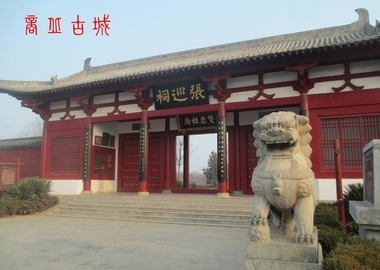
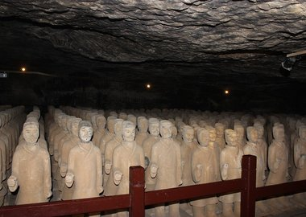
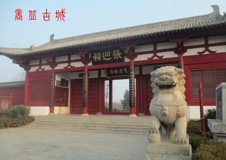
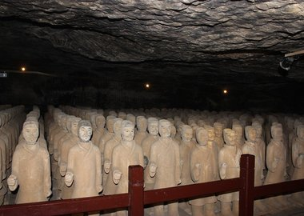

商丘古城 又称归德府城，即明、清时期河南省商丘县城。建于明正德六年，距今已有近500年的历史。
汉兴之地、礼仪之旅——走进芒砀山，体验大汉文化的风情，观赏亚洲最高历史人物雕像，品尝山乡野味观赏美丽风光。
应天府书院又称应天书院、睢阳书院、南京书院、南都书院、南京国子监，位于河南省商丘市睢阳区商丘古城南湖畔，是中国古代著名的四大书院之一，史载“州郡置学始于此”。
张巡祠坐落在商丘古城南门外，是为纪念“安史之乱”中为保卫雎阳而殉难的张巡、许远等人所建。安史之乱时，叛将尹子奇率兵13万围攻睢阳，镇守宁陵的张巡率兵增援。
梁孝王墓位于永城东北34公里芒砀山南脉保安山东侧山腰，距山顶约15米。梁孝王名刘武，汉言文帝次子，初封代王，后封淮阳王，文帝十二年(前168年)改封为梁王，史称梁孝王，死后葬此。


 


